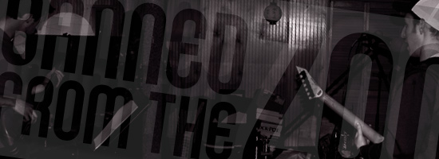
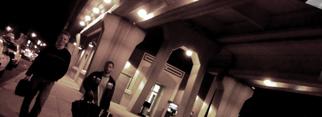

A Slice of History
just a little slice? low in calories, but o so sweet.
Banned from the Zoo is a 5-member rock band from New York. Originally established in 2010, the creative collaboration between dual front-men Andrew & Sanchez sparked the group's birth.
With the support of back-up vocalist and ukuleleist DaveO, Tej and Chez would go on to perform various shows and venues while writing and performing original songs and covers. Eventually gaining local notoriety for their own unique & entertaining pop covers, the trio was in need of a solid bassist and drummer to complete the group. In early 2011, the addition of power-duo Anthony and Mike completed the quintet, providing the band with the solid rhythmic backing needed to start moving the masses.

Keepin' Busy
Don't Quit Your Day Job
All 5 members have growing, successful careers at their respective jobs in Marketing, Branding & Graphic Design. The culmination of these skills only enhancing the creativity already abunduntly flowing from this young group of professionals. Unfortunately the band can only gather after long work-days or during hectic weekends, the 3 city members often having to brave the trecherous LIRR to Anthony's Long Island studio.
The band has already had several live shows in both the city and the island. They have just recorded and released their first album "The BFTZ Demo". So take a moment and go to the music page to listen or download!